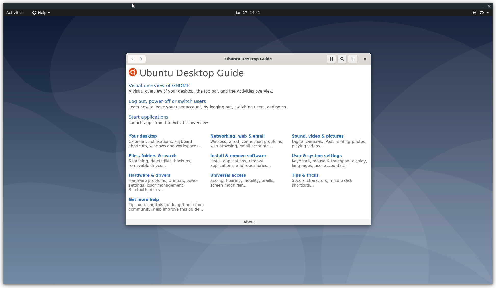

Introduction
The crosvm project is a hosted (a.k.a. type-2) virtual machine monitor.
crosvm runs untrusted operating systems along with virtualized devices. Initially intended to be used with KVM and Linux, crosvm supports multiple kinds of hypervisors. crosvm is focussed on safety within the programming language and a sandbox around the virtual devices to protect the host from attack in case of exploits in crosvm itself.
Other programs similar to crosvm are QEMU and VirtualBox. An operating system, made of a root file system image and a kernel binary, are given as input to crosvm and then crosvm will run the operating system using the platform's hypervisor.
- Announcements
- Developer Mailing List
- #crosvm on matrix.org
- Source code
- GitHub mirror
- API documentation, useful for searching API.
- Files for this book are under /docs/.
- Issue tracker

Building Crosvm
This page describes how to build and develop crosvm on linux. If you are targeting another OS such as ChromeOS, please see Integration
Checking out
Obtain the source code via git clone.
git clone https://chromium.googlesource.com/chromiumos/platform/crosvm
Setting up the development environment
Crosvm uses submodules to manage external dependencies. Initialize them via:
git submodule update --init
It is recommended to enable automatic recursive operations to keep the submodules in sync with the
main repository (But do not push them, as that can conflict with repo):
git config submodule.recurse true
git config push.recurseSubmodules no
Crosvm development best works on Debian derivatives. First install rust via https://rustup.rs/. Then for the rest, we provide a script to install the necessary packages on Debian:
./tools/install-deps
For other systems, please see below for instructions on Using the development container.
Setting up for cross-compilation
Crosvm is built and tested on x86, aarch64 and armhf. Your host needs to be set up to allow installation of foreign architecture packages.
On Debian this is as easy as:
sudo dpkg --add-architecture arm64
sudo dpkg --add-architecture armhf
sudo apt update
On ubuntu this is a little harder and needs some manual modifications of APT sources.
For other systems (including gLinux), please see below for instructions on Using the development container.
With that enabled, the following scripts will install the needed packages:
./tools/install-aarch64-deps
./tools/install-armhf-deps
Using the development container
We provide a Debian container with the required packages installed. With Docker installed, it can be started with:
./tools/dev_container
The container image is big and may take a while to download when first used. Once started, you can follow all instructions in this document within the container shell.
Instead of using the interactive shell, commands to execute can be provided directly:
./tools/dev_container cargo build
Note: The container and build artifacts are preserved between calls to ./tools/dev_container. If
you wish to start fresh, use the --reset flag.
Building a binary
If you simply want to try crosvm, run cargo build. Then the binary is generated at
./target/debug/crosvm. Now you can move to Example Usage.
If you want to enable additional features, use the --features flag.
(e.g. cargo build --features=gdb)
Development
Iterative development
You can use cargo as usual for crosvm development to cargo build and cargo test single crates
that you are working on.
If you are working on aarch64 specific code, you can use the set_test_target tool to instruct
cargo to build for aarch64 and run tests on a VM:
./tools/set_test_target vm:aarch64 && source .envrc
cd mycrate && cargo test
The script will start a VM for testing and write environment variables for cargo to .envrc. With
those cargo build will build for aarch64 and cargo test will run tests inside the VM.
The aarch64 VM can be managed with the ./tools/aarch64vm script.
Running all tests
Crosvm cannot use cargo test --workspace because of various restrictions of cargo. So we have our
own test runner:
./tools/run_tests
Which will run all tests locally. Since we have some architecture-dependent code, we also have the option of running tests within an aarch64 VM:
./tools/run_tests --target=vm:aarch64
When working on a machine that does not support cross-compilation (e.g. gLinux), you can use the dev container to build and run the tests.
./tools/dev_container ./tools/run_tests --target=vm:aarch64
It is also possible to run tests on a remote machine via ssh. The target architecture is automatically detected:
./tools/run_tests --target=ssh:hostname
However, it is your responsibility to make sure the required libraries for crosvm are installed and
password-less authentication is set up. See ./tools/impl/testvm/cloud_init.yaml for hints on what
the VM has installed.
Presubmit checks
To verify changes before submitting, use the presubmit script:
./tools/presubmit
This will run clippy, formatters and runs all tests. The presubmits will use the dev container to build for other platforms if your host is not set up to do so.
To run checks faster, they can be run in parallel in multiple tmux panes:
./tools/presubmit --tmux
The --quick variant will skip some slower checks, like building for other platforms altogether:
./tools/presubmit --quick
Known issues
- By default, crosvm is running devices in sandboxed mode, which requires seccomp policy files to be
set up. For local testing it is often easier to
--disable-sandboxto run everything in a single process. - If your Linux header files are too old, you may find minijail rejecting seccomp filters for
containing unknown syscalls. You can try removing the offending lines from the filter file, or add
--seccomp-log-failuresto the crosvm command line to turn these into warnings. Note that this option will also stop minijail from killing processes that violate the seccomp rule, making the sandboxing much less aggressive. - Seccomp policy files have hardcoded absolute paths. You can either fix up the paths locally, or
set up an awesome hacky symlink:
sudo mkdir /usr/share/policy && sudo ln -s /path/to/crosvm/seccomp/x86_64 /usr/share/policy/crosvm. We'll eventually build the precompiled policies into the crosvm binary. - Devices can't be jailed if
/var/emptydoesn't exist.sudo mkdir -p /var/emptyto work around this for now. - You need read/write permissions for
/dev/kvmto run tests or other crosvm instances. Usually it's owned by thekvmgroup, sosudo usermod -a -G kvm $USERand then log out and back in again to fix this. - Some other features (networking) require
CAP_NET_ADMINso those usually need to be run as root.
Running Crosvm
This chapter includes instructions on how to run crosvm.
- Example Usage: Functioning examples to get started.
- Advanced Usage: Details on how to enable and configure features and devices of crosvm.
- Custom Kernel / Rootfs: Instructions on how to build a kernel and rootfs for crosvm.
- System Requirements: Host and guest requirements for running crosvm
- Features: Feature flags available when building crosvm
Example Usage
This section will explain how to use a prebuilt Ubuntu image as the guest OS. If you want to prepare a kernel and rootfs by yourself, please see Building crosvm.
The example code for this guide is available in tools/examples
Run a simple Guest OS (usig virt-builder)
To run a VM with crosvm, we need two things: A kernel binary and a rootfs. You can build those yourself or use prebuilt cloud/vm images that some linux distributions provide.
Preparing the guest OS image
One of the more convenient ways to customize these VM images is to use virt-builder from the
libguestfs-tools package.
# Build a simple ubuntu image and create a user with no password.
virt-builder ubuntu-20.04 \
--run-command "useradd -m -g sudo -p '' $USER ; chage -d 0 $USER" \
-o ./rootfs
Extract the Kernel (And initrd)
Crosvm directly runs the kernel instead of using the bootloader. So we need to extract the kernel binary from the image. virt-builder has a tool for that:
virt-builder --get-kernel ./rootfs -o .
The kernel binary is going to be saved in the same directory.
Note: Most distributions use an init ramdisk, which is extracted at the same time and needs to be passed to crosvm as well.
Launch the VM
With all the files in place, crosvm can be run:
# Run crosvm without sandboxing.
# The rootfs is an image of a partitioned hard drive, so we need to tell
# the kernel which partition to use (vda5 in case of ubuntu-20.04).
cargo run --features=all-linux -- run \
--disable-sandbox \
--rwdisk ./rootfs \
--initrd ./initrd.img-* \
-p "root=/dev/vda5" \
./vmlinuz-*
The full source for this example can be executed directly:
./tools/examples/example_simple
Add Networking Support
Networking support is easiest set up with a TAP device on the host, which can be done with:
./tools/examples/setup_network
The script will create a TAP device called crosvm_tap and sets up routing. For details, see the
instructions for network devices.
With the crosvm_tap in place we can use it when running crosvm:
# Use the previously configured crosvm_tap device for networking.
cargo run -- run \
--disable-sandbox \
--rwdisk ./rootfs \
--initrd ./initrd.img-* \
--tap-name crosvm_tap \
-p "root=/dev/vda5" \
./vmlinuz-*
To use the network device in the guest, we need to assign it a static IP address. In our example guest this can be done via a netplan config:
# Configure network with static IP 192.168.10.2
network:
version: 2
renderer: networkd
ethernets:
enp0s4:
addresses: [192.168.10.2/24]
nameservers:
addresses: [8.8.8.8]
gateway4: 192.168.10.1
Which can be installed when building the VM image:
builder_args=(
# Create user with no password.
--run-command "useradd -m -g sudo -p '' $USER ; chage -d 0 $USER"
# Configure network via netplan config in 01-netcfg.yaml
--hostname crosvm-test
--copy-in "$SRC/guest/01-netcfg.yaml:/etc/netplan/"
# Install sshd and authorized key for the user.
--install openssh-server
--ssh-inject "$USER:file:$HOME/.ssh/id_rsa.pub"
-o rootfs
)
virt-builder ubuntu-20.04 "${builder_args[@]}"
This also allows us to use SSH to access the VM. The script above will install your
~/.ssh/id_rsa.pub into the VM, so you'll be able to SSH from the host to the guest with no
password:
ssh 192.168.10.2
The full source for this example can be executed directly:
./tools/examples/example_network
Add GUI support
First you'll want to add some desktop environment to the VM image:
builder_args=(
# Create user with no password.
--run-command "useradd -m -g sudo -p '' $USER ; chage -d 0 $USER"
# Configure network. See ./example_network
--hostname crosvm-test
--copy-in "$SRC/guest/01-netcfg.yaml:/etc/netplan/"
# Install a desktop environment to launch
--install xfce4
-o rootfs
)
virt-builder ubuntu-20.04 "${builder_args[@]}"
Then you can use the --gpu argument to specify how gpu output of the VM should be handled. In this
example we are using the virglrenderer backend and output into an X11 window on the host.
# Enable the GPU and keyboard/mouse input. Since this will be a much heavier
# system to run we also need to increase the cpu/memory given to the VM.
# Note: GDM does not allow you to set your password on first login, you have to
# log in on the command line first to set a password.
cargo run --features=gpu,x,virgl_renderer -- run \
--cpus 4 \
--mem 4096 \
--disable-sandbox \
--gpu backend=virglrenderer,width=1920,height=1080 \
--display-window-keyboard \
--display-window-mouse \
--tap-name crosvm_tap \
--rwdisk ./rootfs \
--initrd ./initrd.img-* \
-p "root=/dev/vda5" \
./vmlinuz-*

The full source for this example can be executed directly (Note, you may want to run setup_networking first):
./tools/examples/example_desktop
Advanced Usage
To see the usage information for your version of crosvm, run crosvm or crosvm run --help.
Boot a Kernel
To run a very basic VM with just a kernel and default devices:
crosvm run "${KERNEL_PATH}"
The uncompressed kernel image, also known as vmlinux, can be found in your kernel build directory in
the case of x86 at arch/x86/boot/compressed/vmlinux.
Rootfs
With a disk image
In most cases, you will want to give the VM a virtual block device to use as a root file system:
crosvm run -r "${ROOT_IMAGE}" "${KERNEL_PATH}"
The root image must be a path to a disk image formatted in a way that the kernel can read. Typically
this is a squashfs image made with mksquashfs or an ext4 image made with mkfs.ext4. By using the
-r argument, the kernel is automatically told to use that image as the root, and therefore can
only be given once. More disks can be given with -d or --rwdisk if a writable disk is desired.
To run crosvm with a writable rootfs:
WARNING: Writable disks are at risk of corruption by a malicious or malfunctioning guest OS.
crosvm run --rwdisk "${ROOT_IMAGE}" -p "root=/dev/vda" vmlinux
NOTE: If more disks arguments are added prior to the desired rootfs image, the
root=/dev/vdamust be adjusted to the appropriate letter.
With virtiofs
Linux kernel 5.4+ is required for using virtiofs. This is convenient for testing. The file system must be named "mtd*" or "ubi*".
crosvm run --shared-dir "/:mtdfake:type=fs:cache=always" \
-p "rootfstype=virtiofs root=mtdfake" vmlinux
Device emulation
Crosvm supports several emulated devices and 15+ types of virtio devices. See "Device" chapter for the details.
Control Socket
If the control socket was enabled with -s, the main process can be controlled while crosvm is
running. To tell crosvm to stop and exit, for example:
NOTE: If the socket path given is for a directory, a socket name underneath that path will be generated based on crosvm's PID.
crosvm run -s /run/crosvm.sock ${USUAL_CROSVM_ARGS}
<in another shell>
crosvm stop /run/crosvm.sock
WARNING: The guest OS will not be notified or gracefully shutdown.
This will cause the original crosvm process to exit in an orderly fashion, allowing it to clean up any OS resources that might have stuck around if crosvm were terminated early.
Multiprocess Mode
By default crosvm runs in multiprocess mode. Each device that supports running inside of a sandbox
will run in a jailed child process of crosvm. The appropriate minijail seccomp policy files must be
present either in /usr/share/policy/crosvm or in the path specified by the --seccomp-policy-dir
argument. The sandbox can be disabled for testing with the --disable-sandbox option.
GDB Support
crosvm supports GDB Remote Serial Protocol to allow developers to debug guest kernel via GDB (x86 only).
You can enable the feature by --gdb flag:
# Use uncompressed vmlinux
crosvm run --gdb <port> ${USUAL_CROSVM_ARGS} vmlinux
Then, you can start GDB in another shell.
gdb vmlinux
(gdb) target remote :<port>
(gdb) hbreak start_kernel
(gdb) c
<start booting in the other shell>
For general techniques for debugging the Linux kernel via GDB, see this kernel documentation.
Defaults
The following are crosvm's default arguments and how to override them.
- 256MB of memory (set with
-m) - 1 virtual CPU (set with
-c) - no block devices (set with
-r,-d, or--rwdisk) - no network (set with
--host-ip,--netmask, and--mac) - only the kernel arguments necessary to run with the supported devices (add more with
-p) - run in multiprocess mode (run in single process mode with
--disable-sandbox) - no control socket (set with
-s)
Custom Kernel / Rootfs
This document explains how to build a custom kernel and use debootstrab to build a rootfs for running crosvm.
For an easier way to get started with prebuilt images, see Example Usage
Build a kernel
The linux kernel in chromiumos comes preconfigured for running in a crosvm guest and is the easiest to build. You can use any mainline kernel though as long as it's configured for para-virtualized (virtio) devices
If you are using the chroot for Chromium OS development, you already have the kernel source. Otherwise, you can clone it:
git clone --depth 1 -b chromeos-5.10 https://chromium.googlesource.com/chromiumos/third_party/kernel
Either way that you get the kernel, the next steps are to configure and build the bzImage:
CHROMEOS_KERNEL_FAMILY=termina ./chromeos/scripts/prepareconfig container-vm-x86_64
make olddefconfig
make -j$(nproc) bzImage
This kernel does not build any modules, nor does it support loading them, so there is no need to worry about an initramfs, although they are supported in crosvm.
Build a rootfs disk
This stage enjoys the most flexibility. There aren't any special requirements for a rootfs in
crosvm, but you will at a minimum need an init binary. This could even be /bin/bash if that is
enough for your purposes. To get you started, a Debian rootfs can be created with debootstrap.
Make sure to define $CHROOT_PATH.
truncate -s 20G debian.ext4
mkfs.ext4 debian.ext4
mkdir -p "${CHROOT_PATH}"
sudo mount debian.ext4 "${CHROOT_PATH}"
sudo debootstrap stable "${CHROOT_PATH}" http://deb.debian.org/debian/
sudo chroot "${CHROOT_PATH}"
passwd
echo "tmpfs /tmp tmpfs defaults 0 0" >> /etc/fstab
echo "tmpfs /var/log tmpfs defaults 0 0" >> /etc/fstab
echo "tmpfs /root tmpfs defaults 0 0" >> /etc/fstab
echo "sysfs /sys sysfs defaults 0 0" >> /etc/fstab
echo "proc /proc proc defaults 0 0" >> /etc/fstab
exit
sudo umount "${CHROOT_PATH}"
Note: If you run crosvm on a testing device (e.g. Chromebook in Developer mode), another option is to share the host's rootfs with the guest via virtiofs. See the virtiofs usage.
You can simply create a disk image as follows:
fallocate --length 4G disk.img
mkfs.ext4 ./disk.img
System Requirements
A Linux kernel with KVM support (check for /dev/kvm) is required to run crosvm. In order to run
certain devices, there are additional system requirements:
virtio-wayland- Thememfd_createsyscall, introduced in Linux 3.17, and a Wayland compositor.vsock- Host Linux kernel with vhost-vsock support, introduced in Linux 4.8.multiprocess- Host Linux kernel with seccomp-bpf and Linux namespacing support.virtio-net- Host Linux kernel with TUN/TAP support (check for/dev/net/tun) and running withCAP_NET_ADMINprivileges.
Features
These features can be enabled using cargo's --features flag. Refer to the top-level Cargo.toml
file to see which features are enabled by default.
audio
Enables experimental audio input/ouput to the host. Requires some Chrome OS specific dependencies and daemons currently.
chromeos
This option enables features specific to a Chrome OS environment. Examples of that are usage of non-upstream kernel security features in the Chrome OS kernel, which should be temporary until upstream catches up. Another example would be code to use Chrome OS system daemons like the low memory notifier.
These features exist because crosvm was historically a Chrome OS only project, but crosvm is intended to be OS agnostic now. If Chrome OS specific code is identified, it should be conditionally compiled in using this feature.
composite-disk
Enables the composite-disk format, which adds protobufs as a dependency of the build. This format is intended to speed up crosvm's usage in CI environments that might otherwise have to concatenate large file system images into a single disk image.
default-no-sandbox
This feature is useful only in testing so that the --disable-sandbox flag doesn't need to be
passed to crosvm every invocation. It is not secure to deploy crosvm with this flag.
direct
Enables a set of features to passthrough devices to the guest via VFIO.
gdb
Enables using gdb to debug the guest kernel.
gfxstream
Enables 3D acceleration for guest via the gfxstream protocol over virtio-gpu. This is used for
compatibility with the Android Emulator. The protocol provides the best speed and compatibility with
GL/vulkan versions by forwarding the guest's calls to the host's graphics libraries and GPU.
However, this means the sandbox is not enabled for the virtio-gpu device.
gpu
Enables basic virtio-gpu support. This includes basic display and input features, but lacks 3D acceleration in the absence of other crosvm features.
plugin
Enables the plugin mode of crosvm. The plugin mode delegates almost all device emulation to a sandboxed child process. Unless you know what you're doing, you almost certainly don't need this feature.
power-monitor-powerd
Enables emulation of a battery using the host's power information provided by powerd.
tpm
Enables trusted platform module emulation for the guest. This relies on the software emulated vTPM
implementation from libtpm2 which is suited only for testing purposes.
usb
Enables USB host device passthrough via an emulated XHCI controller.
video-decoder/video-encoder
Enables the unstable virtio video encoder or decoder devices.
virgl_renderer/virgl_renderer_next
Enables 3D acceleration for the guest via the virglrenderer library over virtio-gpu. The
virgl_renderer_next variant is used to enable in development features of virglrenderer to
support newer OpenGL versions.
wl
Enables the non-upstream virtio wayland protocol. This can be used in conjuction with the gpu
feature to enable a zero-copy display pipeline.
x
Enables the usage of the X11 protocol for display on the host.
Programmatic Interaction Using the crosvm_control Library
Usage
crosvm_control
provides a programmatic way to interface with crosvm as a substitute to the CLI.
The library itself is written in Rust, but a C/C++ compatible header (crosvm_control.h) is
generated during the crosvm build and emitted to the Rust OUT_DIR.
(See the build.rs
script for more information).
The best practice for using crosvm_control from your project is to exclusively use the
crosvm_control.h generated by the crosvm build. This ensures that there will never be a runtime
version mismatch between your project and crosvm. Additionally, this will allow for build-time
checks against the crosvm API.
During your project's build step, when building the crosvm dependency, the emitted
crosvm_control.h should be installed to your project's include dir - overwriting the old version
if present.
Changes
As crosvm_control is a externally facing interface to crosvm, great care must be taken when
updating the API surface. Any breaking change to a crosvm_control entrypoint must be handled the
same way as a breaking change to the crosvm CLI.
As a general rule, additive changes (such as adding new fields to the end of a struct, or adding a
new API) are fine and should be integrated correctly with downstream projects so long as those
projects follow the usage best practices. Changes that change the signature of any existing
crosvm_control function will cause problems downstream and should be considered a breaking change.
(ChromeOS Developers Only)
For ChromeOS, it is possible to integrate a breaking change from upstream crosvm, but it should be avoided if at all possible. See here for more information.
Devices
This chapter describes emulated devices in crosvm. These devices work like hardware for the guest.
List of devices
Here is a (non-comprehensive) list of emulated devices provided by crosvm.
Emulated Devices
CMOS/RTC- Used to get the current calendar time.i8042- Used by the guest kernel to exit crosvm.serial- x86 I/O port driven serial devices that print to stdout and take input from stdin.
VirtIO Devices
balloon- Allows the host to reclaim the guest's memories.block- Basic read/write block device.console- Input and outputs on console.fs- Shares file systems over the FUSE protocol.gpu- Graphics adapter.input- Creates virtual human interface devices such as keyboards.iommu- Emulates an IOMMU device to manage DMA from endpoints in the guest.net- Device to interface the host and guest networks.p9- Shares file systems over the 9P protocol.pmem- Persistent memory.rng- Entropy source used to seed guest OS's entropy pool.snd- Encodes and decodes audio streams.tpm- Creates a TPM (Trusted Platform Module) device backed by libtpm2 simulator or vTPM daemon.video- Allows the guest to leverage the host's video capabilities.wayland- Allows the guest to use the host's Wayland socket.vsock- Enables use of virtual sockets for the guest.vhost-user- VirtIO devices which offloads the device implementation to another process through the vhost-user protocol.- vmm side: Shares its virtqueues.
- device side: Consumes virtqueues.
Block
crosvm supports virtio-block device that works as a disk for the guest.
First, create a ext4 (or whatever file system you want) disk file.
fallocate -l 1G disk.img
mkfs.ext4 disk.img
Then, pass it with --rwdisk flag so the disk will be exposed as /dev/vda, /dev/vdb, etc. The
device can be mounted with the mount command.
crosvm run \
--rwdisk disk.img
... # usual crosvm args
To expose the block device as a read-only disk, you can use --disk instead of --rwdisk.
Rootfs
If you use a block device as guest's rootfs, you can specify --root (for a read-only disk) or
--rwroot (for writable disk). These options are equivalent to --disk or --rwdisk,
respectively, except that the root variants automatically add a root=/dev/vdX ro kernel
parameter with the corresponding virtio-block device name and read-only (ro) or read-write (rw)
option.
Options
The block device flags (--disk, --rwdisk, --root, and --rwroot) support additional options
to enable features and control disk parameters. These may be specified as extra comma-separated
key=value options appended to the required filename option. For example:
crosvm run
--disk disk.img,sparse=false,o_direct=true,block_size=4096,id=MYSERIALNO
... # usual crosvm args
The available options are documented in the following sections.
Sparse
- Syntax:
sparse=(true|false) - Default:
sparse=true
The sparse option controls whether the disk exposes the thin provisioning discard command. If
sparse is set to true, the VIRTIO_BLK_T_DISCARD request will be available, and it will be
translated to the appropriate system call on the host disk image file (for example,
fallocate(FALLOC_FL_PUNCH_HOLE) for raw disk images on Linux). If sparse is set to false, the
disk will be fully allocated at startup (using fallocate() or equivalent on other platforms),
and the VIRTIO_BLK_T_DISCARD request will not be supported for this device.
O_DIRECT
- Syntax:
o_direct=(true|false) - Default:
o_direct=false
The o_direct option enables the Linux O_DIRECT flag on the underlying disk image, indicating
that I/O should be sent directly to the backing storage device rather than using the host page
cache. This should only be used with raw disk images, not qcow2 or other formats. The block_size
option may need to be adjusted to ensure that I/O is sufficiently aligned for the host block device
and filesystem requirements.
Block size
- Syntax:
block_size=BYTES - Default:
block_size=512
The block_size option overrides the reported block size (also known as sector size) of the
virtio-block device. This should be a power of two larger than or equal to 512.
ID
- Syntax:
id=DISK_ID - Default: No identifier
The id option provides the virtio-block device with a unique identifier. The DISK_ID string must
be 20 or fewer ASCII printable characters. The id may be used by the guest environment to uniquely
identify a specific block device rather than making assumptions about block device names.
The Linux virtio-block driver exposes the disk identifer in a sysfs file named serial; an
example path looks like /sys/devices/pci0000:00/0000:00:02.0/virtio1/block/vda/serial (the PCI
address may differ depending on which other devices are enabled).
Resizing
The crosvm block device supports run-time resizing. This can be accomplished by starting crosvm with
the -s control socket, then using the crosvm disk command to send a resize request:
crosvm disk resize DISK_INDEX NEW_SIZE VM_SOCKET
DISK_INDEX: 0-based index of the block device (counting all--disk,--root, andrwvariants in order).NEW_SIZE: desired size of the disk image in bytes.VM_SOCKET: path to the VM control socket specified when running crosvm (-s/--socketoption).
For example:
# Create a 1 GiB disk image
truncate -s 1G disk.img
# Run crosvm with a control socket
crosvm run \
--rwdisk disk.img,sparse=false \
-s /tmp/crosvm.sock \
... # other crosvm args
# In another shell, extend the disk image to 2 GiB.
crosvm disk resize \
0 \
$((2 * 1024 * 1024 * 1024)) \
/tmp/crosvm.sock
# The guest OS should recognize the updated size and log a message:
# virtio_blk virtio1: [vda] new size: 4194304 512-byte logical blocks (2.15 GB/2.00 GiB)
The crosvm disk resize command only resizes the block device and its backing disk image. It is the
responsibility of the VM socket user to perform any partition table or filesystem resize operations,
if required.
Network
The most convenient way to provide a network device to a guest is to setup a persistent TAP interface on the host. This section will explain how to do this for basic IPv4 connectivity.
sudo ip tuntap add mode tap user $USER vnet_hdr crosvm_tap
sudo ip addr add 192.168.10.1/24 dev crosvm_tap
sudo ip link set crosvm_tap up
These commands create a TAP interface named crosvm_tap that is accessible to the current user,
configure the host to use the IP address 192.168.10.1, and bring the interface up.
The next step is to make sure that traffic from/to this interface is properly routed:
sudo sysctl net.ipv4.ip_forward=1
# Network interface used to connect to the internet.
HOST_DEV=$(ip route get 8.8.8.8 | awk -- '{printf $5}')
sudo iptables -t nat -A POSTROUTING -o "${HOST_DEV}" -j MASQUERADE
sudo iptables -A FORWARD -i "${HOST_DEV}" -o crosvm_tap -m state --state RELATED,ESTABLISHED -j ACCEPT
sudo iptables -A FORWARD -i crosvm_tap -o "${HOST_DEV}" -j ACCEPT
The interface is now configured and can be used by crosvm:
crosvm run \
...
--tap-name crosvm_tap \
...
Provided the guest kernel had support for VIRTIO_NET, the network device should be visible and
configurable from the guest:
# Replace with the actual network interface name of the guest
# (use "ip addr" to list the interfaces)
GUEST_DEV=enp0s5
sudo ip addr add 192.168.10.2/24 dev "${GUEST_DEV}"
sudo ip link set "${GUEST_DEV}" up
sudo ip route add default via 192.168.10.1
# "8.8.8.8" is chosen arbitrarily as a default, please replace with your local (or preferred global)
# DNS provider, which should be visible in `/etc/resolv.conf` on the host.
echo "nameserver 8.8.8.8" | sudo tee /etc/resolv.conf
These commands assign IP address 192.168.10.2 to the guest, activate the interface, and route all
network traffic to the host. The last line also ensures DNS will work.
Please refer to your distribution's documentation for instructions on how to make these settings persistent for the host and guest if desired.
Balloon
crosvm supports virtio-balloon for managing guest memory.
How to control the balloon size
When running a VM, specify VM_SOCKET with -s option. (example: /run/crosvm.sock)
crosvm run \
-s ${CROSVM_SOCKET} \
# usual crosvm args
./vmlinux
Then, open another terminal and specify the balloon size in bytes with crosvm balloon command.
crosvm balloon 4096 ${CROSVM_SOCKET}
Note: The size of balloon is managed in 4096 bytes units. The specified value will be rounded down to a multiple of 4096 bytes.
You can confirm the balloon size with crosvm balloon_stats command.
crosvm balloon_stats ${CROSVM_SOCKET}
Pmem
crosvm supports virtio-pmem to provide a virtual device emulating a byte-addressable persistent
memory device. The disk image is provided to the guest using a memory-mapped view of the image file,
and this mapping can be directly mapped into the guest's address space if the guest operating system
and filesystem support DAX.
Pmem devices may be added to crosvm using the --pmem-device (read only) or --rw-pmem-device
(read-write) flag, specifying the filename of the backing image as the parameter.
crosvm run \
--pmem-device disk.img \
... # usual crosvm args
The Linux virtio-pmem driver can be enabled with the CONFIG_VIRTIO_PMEM option. It will expose
pmem devices as /dev/pmem0, /dev/pmem1, etc., which may be mounted like any other block device.
A pmem device may also be used as a root filesystem by adding a root= kernel command line
parameters:
crosvm run \
--pmem-device rootfs.img \
-p "root=/dev/pmem0 ro" \
... # usual crosvm args
The advantage of pmem over a regular block device is the potential for less cache duplication; since
the guest can directly map pages of the pmem device, it does not need to perform an extra copy into
the guest page cache. This can result in lower memory overhead versus virtio-block (when not using
O_DIRECT).
The file backing a persistent memory device is mapped directly into the guest's address space, which
means that only the raw disk image format is supported; disk images in qcow2 or other formats may
not be used as a pmem device. See the block device for an alternative that supports
more file formats.
Wayland
If you have a Wayland compositor running on your host, it is possible to display and control guest applications from it. This requires:
- A guest kernel version 5.16 or above with
CONFIG_DRM_VIRTIO_GPUenabled, - The
sommelierWayland proxy in your guest image.
This section will walk you through the steps needed to get this to work.
Guest kernel requirements
Wayland support on crosvm relies on virtio-gpu contexts, which have been introduced in Linux 5.16.
Make sure your guest kernel is either this version or a more recent one, and that
CONFIG_DRM_VIRTIO_GPU is enabled in your kernel configuration.
Crosvm requirements
Wayland forwarding requires the GPU feature and any non-2d virtio-gpu mode to be enabled, so pass
them to your cargo build or cargo run command, e.g:
cargo build --features "gpu,virgl_renderer,virgl_renderer_next"
Building sommelier
Sommelier is a proxy Wayland compositor that forwards the Wayland protocol from a guest to a compositor running on the host through the guest GPU device. As it is not a standard tool, we will have to build it by ourselves. It is recommended to do this from the guest with networking enabled.
Clone Chrome OS' platform2 repository, which contains the source for sommelier:
git clone https://chromium.googlesource.com/chromiumos/platform2
Go into the sommelier directory and prepare for building:
cd platform2/vm_tools/sommelier/
meson setup build -Dwith_tests=false
This setup step will check for all libraries required to build sommelier. If some are missing,
install them using your guest's distro package manager and re-run meson setup until it passes.
Finally, build sommelier and install it:
meson compile -C build
sudo meson install -C build
This last step will put the sommelier binary into /usr/local/bin.
Running guest Wayland apps
Crosvm can connect to a running Wayland server (e.g. weston) on the host and forward the protocol
from all Wayland guest applications to it. To enable this you need to know the socket of the Wayland
server running on your host - typically it would be $XDG_RUNTIME_DIR/wayland-0.
Once you have confirmed the socket, create a GPU device and enable forwarding by adding the
--gpu --wayland-sock $XDG_RUNTIME_DIR/wayland-0 arguments to your crosvm command-line.
You can now run Wayland clients through sommelier, e.g:
sommelier --virtgpu-channel weston-terminal
Or
sommelier --virtgpu-channel gedit
Applications started that way should appear on and be controllable from the Wayland server running on your host.
The --virtgpu-channel option is currently necessary for sommelier to work with the setup of this
document, but will likely not be required in the future.
If you have Xwayland installed in the guest you can also run X applications:
sommelier -X --xwayland-path=/usr/bin/Xwayland xeyes
Video (experimental)
The virtio video decoder and encoder devices allow a guest to leverage the host's hardware-accelerated video decoding and encoding capabilities. The specification (v3, v5) for these devices is still a work-in-progress, so testing them requires an out-of-tree kernel driver on the guest.
The virtio-video host device uses backends to perform the actual decoding. The currently supported backends are:
libvda, a hardware-accelerated backend that supports both decoding and encoding by delegating the work to a running instance of Chrome. It can only be built and used in a Chrome OS environment.ffmpeg, a software-based backend that only supports decoding at the moment. It exists to make testing and development of virtio-video easier, as it does not require any particular hardware and is based on a reliable codec library.
The rest of this document will solely focus on the ffmpeg backend. More accelerated backends will
be added in the future.
Guest kernel requirements
The virtio_video branch of this kernel git repository contains
a work-in-progress version of the virtio-video guest kernel driver, based on a (hopefully) recent
version of mainline Linux. If you use this as your guest kernel, the virtio_video_defconfig
configuration should allow you to easily boot from crosvm, with the video (and a few other) virtio
devices support built-in.
Quick building guide after checking out this branch:
mkdir build_crosvm_x86
make O=build_crosvm_x86 virtio_video_defconfig
make O=build_crosvm_x86 -j16
The resulting kernel image that can be passed to crosvm will be in
build_crosvm_x86/arch/x86/boot/compressed/vmlinux.bin.
Crosvm requirements
Since virtio-video is still experimental, support is not built by default and must be explicitly
enabled through the video-decoder feature. The Ffmpeg backend must also be enabled with the
ffmpeg feature - since it only supports decoding for now, we don't enable the video-encoder
feature.
cargo build --features "video-decoder,ffmpeg"
To enable the decoder device, crosvm must also be started with the --video-decoder=ffmpeg
command-line argument:
crosvm run --disable-sandbox --video-decoder=ffmpeg -c 4 -m 2048 --rwroot /path/to/disk.img --serial type=stdout,hardware=virtio-console,console=true,stdin=true /path/to/vmlinux.bin
If the guest kernel includes the virtio-video driver, then the device should be probed and show up.
Testing the device from the guest
Video capabilities are exposed to the guest using V4L2. The decoder device should appear as
/dev/videoX, probably /dev/video0 if there are no V4L2 devices.
Checking capabilities and formats
v4l2-ctl, part of the v4l-utils package, can be used to confirm the device is here:
v4l2-ctl -d/dev/video0 --info
Driver Info:
Driver name : virtio-video
Card type : ffmpeg
Bus info : virtio:stateful-decoder
Driver version : 5.17.0
Capabilities : 0x84204000
Video Memory-to-Memory Multiplanar
Streaming
Extended Pix Format
Device Capabilities
Device Caps : 0x04204000
Video Memory-to-Memory Multiplanar
Streaming
Extended Pix Format
Note that the Card type is ffmpeg, indicating that decoding will be performed in software on the
host. We can then query the support input (OUTPUT in V4L2-speak) formats, i.e. the encoded formats
we can send to the decoder:
v4l2-ctl -d/dev/video0 --list-formats-out
ioctl: VIDIOC_ENUM_FMT
Type: Video Output Multiplanar
[0]: 'VP90' (VP9, compressed)
[1]: 'VP80' (VP8, compressed)
[2]: 'HEVC' (HEVC, compressed)
[3]: 'H264' (H.264, compressed)
Similarly, you can check the supported output (or CAPTURE) pixel formats for decoded frames:
v4l2-ctl -d/dev/video0 --list-formats
ioctl: VIDIOC_ENUM_FMT
Type: Video Capture Multiplanar
[0]: 'NV12' (Y/CbCr 4:2:0)
Test decoding with v4l2r
Performing actual decoding with mainstream tools (like GStreamer or Ffmpeg) is unfortunately still quite buggy, but the v4l2r Rust crate features an example program that can use this driver:
git clone https://github.com/Gnurou/v4l2r
cd v4l2r
wget https://github.com/chromium/chromium/raw/main/media/test/data/test-25fps.h264
cargo run --example simple_decoder test-25fps.h264 /dev/video0 --input_format h264 --save test-25fps.nv12
This will decode test-25fps.h264 and write the raw decoded frames in NV12 format into
test-25fps.nv12. You can check the result with e.g. YUView.
Test decoding with ffmpeg
Alternatively, Ffmpeg is also able (most of the time) to decode the first 3 frames of the stream, but then stops due to driver compliance issues:
wget https://github.com/chromium/chromium/raw/main/media/test/data/test-25fps.h264
ffmpeg -codec:v h264_v4l2m2m -i test-25fps.h264 test-25fps-%d.png
This should create 3 PNG files each containing a decoded frame from the stream. Specifying
-codec:v h264_v4l2m2m will make use of the V4L2 decoder driver to perform the task.
Vhost-user devices
Crosvm supports vhost-user devices for most virtio devices (block, net, etc ) so that device emulation can be done outside of the main vmm process.
Here is a diagram showing how vhost-user block device back-end and a vhost-user block front-end in crosvm VMM work together.
How to run
Let's take a block device as an example and see how to start vhost-user devices.
First, start vhost-user block backend with crosvm device command, which waits for a vmm process
connecting to the socket.
# One-time commands to create a disk image.
fallocate -l 1G disk.img
mkfs.ext4 disk.img
VHOST_USER_SOCK=/tmp/vhost-user.socket
# Start vhost-user block backend listening on $VHOST_USER_SOCK
crosvm device block \
--socket "${VHOST_USER_SOCK}" \
--file disk.img
Then, open another terminal and start a vmm process with --vhost-user-blk flag.
crosvm run \
--vhost-user-blk "${VHOST_USER_SOCK}" \
<usual crosvm arguments>
vmlinux
As a result, disk.img should be exposed as /dev/vda just like with --rwdisk disk.img.
Virtio Vhost-User device (VVU)
Crosvm also supports the virtio vhost-user (VVU) device to run a vhost-user device back-end inside of another VM's guest. The following diagram shows how VVU works for virtio-block.

The "virtio vhost-user device", which is also called "vvu-proxy", is a virtio PCI device that works as a proxy of vhost-user messages between the vhost-user device back-end in the guest of a VM (device VM) and the vhost-user front-end in another VM (sibling VM).
How to run
Let's take a block device as an example and see how to start VVU devices.
First, start a device VM with a usual crosvm run command. At this time, put a crosvm binary in the
guest in some way. (e.g. putting it in a disk, sharing the host's crosvm with virtiofs, building
crosvm in the guest, etc)
# On the host.
VHOST_USER_SOCK=/tmp/vhost-user.socket
# Specify the PCI address that the VVU proxy device will be allocated.
# If you don't pass `addr=` as an argument of `--vvu-proxy` below, crosvm will
# allocate it to the first available address.
VVU_PCI_ADDR="0000:00:10.0"
# Start the device VM.
crosvm run \
--vvu-proxy "${VHOST_USER_SOCK},addr=${VVU_PCI_ADDR}" \
... # usual crosvm args
vmlinux
Then you can check that the VVU proxy device is allocated at the specified address by running
lspci in the guest.
# Inside of the device VM guet.
lspci -s $VVU_PCI_ADDR
# Expected output:
# > 00:10.0 Unclassified device [00ff]: Red Hat, Inc. Device 107d (rev 01)
# '107d' is the device ID for the VVU proxy device.
Second, start a VVU block device backend in the guest that you just started. Although the command
crosvm device is the same as vhost-user's example, you need to use the --vfio
flag instead of the --socket flag.
# Inside of the device VM guest
crosvm device block \
--vfio ${VVU_PCI_ADDR} \
--file disk.img
Finally, open another terminal and start a vmm process with --vhost-user-blk flag on the host.
# On the host, start a sibling VM. This can be done in the same way as the vhost-user block front-end.
crosvm run \
--vhost-user-blk ${VHOST_USER_SOCK} \
... # usual crosvm args
vmlinux
As a result, disk.img in the device VM should be exposed as /dev/vda in the guest of the sibling
VM.
Crosvm System Integration
The following sections describe how crosvm is integrated into other projects.
Crosvm on ChromeOS
Crosvm is included in the ChromeOS source tree at src/platform/crosvm.
Since crosvm is developed independently of ChromeOS, submitted code is not directly included in
ChromeOS builds. The main development branch is main, which is tested on crosvm's own
infrastructure, running unit and integration tests on linux.
ChromeOS follows the chromeos branch, which undergoes testing by the ChromeOS CQ and is merged
with main roughtly once per week by the crosvm team.
Has my change landed in ChromeOS (Googlers only)?
You can use the crosland tool to check in which ChromeOS version your changes
has been merged into the chromeos branch.
The merge will also contain all BUG= references that will notify your bugs about when the change
is submitted.
For more details on the process, please see go/crosvm-playbook (Google only).
Using repo
The repository at src/platform/crosvm is tracking the chromeos branch, which is also used by
repo start, so you can develop with a CQ-tested foundation.
However, changes are not acceped to the cros/chromeos branch, and should be submitted to
cros/main instead.
Use repo upload -D main to upload changes to the main branch, which works fine in most cases where
gerrit and kokoro can rebase the commit cleanly. If not, please rebase to cros/main manually:
git branch --set-upstream-to cros/main
git rebase
If this doesn't work, use tools/chromeos/rebase_for_review to rebase the changes onto main and
repo upload to upload changes to the main branch.
First time setup / running tools
-
All CrosVM
toolsare not expected to work inside the ChromeOS chroot. As such, they must be run outside the chroot (but inside the source tree). -
Cloning the ChromeOS source tree will not clone submodules relied upon by the CrosVM build (e.g. as used by
tools). To fix this, rungit submodules update --initin thecrosvmroot from outside the chroot.
Cq-Depend
We cannot support Cq-Depend to sychronize changes with other ChromeOS repositories. Please try to make changes in a backwards compatible way to allow them to be submitted independently.
If it cannot be avoided at all, please follow the instructions below to manually cherry-pick your
change to the chromeos branch.
Cherry-picking
If you need your changes faster than the usual merge frequency, or need to use Cq-Depend, please
consider cherry-picking your changes to the chromeos branch manually.
In order to do so, upload your change to the main branch and get a review as usual. Before
submitting the changes to the main branch, use the "Cherry-Pick" function in the "..." menu of the
gerrit UI.
The created cherry-pick can be annotated with Cq-Depend if needed and can be submitted through the CQ like any other ChromeOS change.
Only after the cherry-pick is submitted, submit the change to the main branch as well.
Never submit code to just the chromeos branch, as it will cause upstream to diverge and result
in merge conflicts down the road.
Building for ChromeOS
Crosvm can be built with ChromeOS features using Portage or cargo.
If ChromeOS-specific features are not needed, or you want to run the full test suite of crosvm, the Building Crosvm workflows can be used from the crosvm repository of ChromeOS as well.
Using Portage
crosvm on ChromeOS is usually built with Portage, so it follows the same general workflow as any
cros_workon package. The full package name is chromeos-base/crosvm.
See the Chromium OS developer guide for more on how to build and deploy with Portage.
NOTE:
cros_workon_makeallows faster, iterative builds, but modifies crosvm's Cargo.toml. Please be careful not to commit the changes. Moreover, with the changes cargo will fail to build and clippy preupload check will fail.
Using Cargo
Since development using portage can be slow, it's possible to build crosvm for ChromeOS using cargo
for faster iteration times. To do so, the Cargo.toml file needs to be updated to point to
dependencies provided by ChromeOS using ./tools/chromeos/setup_cargo.
Architecture
The principle characteristics of crosvm are:
- A process per virtual device, made using fork
- Each process is sandboxed using minijail
- Takes full advantage of KVM and low-level Linux syscalls, and so only runs on Linux
- Written in Rust for security and safety
A typical session of crosvm starts in main.rs where command line parsing is done to build up a
Config structure. The Config is used by run_config in linux/mod.rs to setup and execute a
VM. Broken down into rough steps:
- Load the linux kernel from an ELF file.
- Create a handful of control sockets used by the virtual devices.
- Invoke the architecture specific VM builder
Arch::build_vm(located inx86_64/src/lib.rsoraarch64/src/lib.rs). Arch::build_vmwill itself invoke the providedcreate_devicesfunction fromlinux/mod.rscreate_devicescreates every PCI device, including the virtio devices, that were configured inConfig, along with matching minijail configs for each.Arch::generate_pci_root, using a list of every PCI device with optionalMinijail, will finally jail the PCI devices and construct aPciRootthat communicates with them.- Once the VM has been built, it's contained within a
RunnableLinuxVmobject that is used by the VCPUs and control loop to service requests until shutdown.
Forking
During the device creation routine, each device will be created and then wrapped in a ProxyDevice
which will internally fork (but not exec) and minijail the device, while dropping it for the
main process. The only interaction that the device is capable of having with the main process is via
the proxied trait methods of BusDevice, shared memory mappings such as the guest memory, and file
descriptors that were specifically allowed by that device's security policy. This can lead to some
surprising behavior to be aware of such as why some file descriptors which were once valid are now
invalid.
Sandboxing Policy
Every sandbox is made with minijail and starts with create_base_minijail in
linux/jail_helpers.rs which set some very restrictive settings. Linux namespaces and seccomp
filters are used extensively. Each seccomp policy can be found under
seccomp/{arch}/{device}.policy and should start by @include-ing the common_device.policy. With
the exception of architecture specific devices (such as Pl030 on ARM or I8042 on x86_64), every
device will need a different policy for each supported architecture.
The VM Control Sockets
For the operations that devices need to perform on the global VM state, such as mapping into guest memory address space, there are the vm control sockets. There are a few kinds, split by the type of request and response that the socket will process. This also proves basic security privilege separation in case a device becomes compromised by a malicious guest. For example, a rogue device that is able to allocate MSI routes would not be able to use the same socket to (de)register guest memory. During the device initialization stage, each device that requires some aspect of VM control will have a constructor that requires the corresponding control socket. The control socket will get preserved when the device is sandboxed and the other side of the socket will be waited on in the main process's control loop.
The socket exposed by crosvm with the --socket command line argument is another form of the VM
control socket. Because the protocol of the control socket is internal and unstable, the only
supported way of using that resulting named unix domain socket is via crosvm command line
subcommands such as crosvm stop.
GuestMemory
GuestMemory and its friends VolatileMemory, VolatileSlice, MemoryMapping, and
SharedMemory, are common types used throughout crosvm to interact with guest memory. Know which
one to use in what place using some guidelines
GuestMemoryis for sending around references to all of the guest memory. It can be cloned freely, but the underlying guest memory is always the same. Internally, it's implemented usingMemoryMappingandSharedMemory. Note thatGuestMemoryis mapped into the host address space (for non-protected VMs), but it is non-contiguous. Device memory, such as mapped DMA-Bufs, are not present inGuestMemory.SharedMemorywraps amemfdand can be mapped usingMemoryMappingto access its data.SharedMemorycan't be cloned.VolatileMemoryis a trait that exposes generic access to non-contiguous memory.GuestMemoryimplements this trait. Use this trait for functions that operate on a memory space but don't necessarily need it to be guest memory.VolatileSliceis analogous to a Rust slice, but unlike those, aVolatileSlicehas data that changes asynchronously by all those that reference it. Exclusive mutability and data synchronization are not available when it comes to aVolatileSlice. This type is useful for functions that operate on contiguous shared memory, such as a single entry from a scatter gather table, or for safe wrappers around functions which operate on pointers, such as areadorwritesyscall.MemoryMappingis a safe wrapper around anonymous and file mappings. Provides RAII and does munmap after use. Access via Rust references is forbidden, but indirect reading and writing is available viaVolatileSliceand several convenience functions. This type is most useful for mapping memory unrelated toGuestMemory.
See memory layout for details how crosvm arranges the guest address space.
Device Model
Bus/BusDevice
The root of the crosvm device model is the Bus structure and its friend the BusDevice trait. The
Bus structure is a virtual computer bus used to emulate the memory-mapped I/O bus and also I/O
ports for x86 VMs. On a read or write to an address on a VM's bus, the corresponding Bus object is
queried for a BusDevice that occupies that address. Bus will then forward the read/write to the
BusDevice. Because of this behavior, only one BusDevice may exist at any given address. However,
a BusDevice may be placed at more than one address range. Depending on how a BusDevice was
inserted into the Bus, the forwarded read/write will be relative to 0 or to the start of the
address range that the BusDevice occupies (which would be ambiguous if the BusDevice occupied
more than one range).
Only the base address of a multi-byte read/write is used to search for a device, so a device
implementation should be aware that the last address of a single read/write may be outside its
address range. For example, if a BusDevice was inserted at base address 0x1000 with a length of
0x40, a 4-byte read by a VCPU at 0x39 would be forwarded to that BusDevice.
Each BusDevice is reference counted and wrapped in a mutex, so implementations of BusDevice need
not worry about synchronizing their access across multiple VCPUs and threads. Each VCPU will get a
complete copy of the Bus, so there is no contention for querying the Bus about an address. Once
the BusDevice is found, the Bus will acquire an exclusive lock to the device and forward the
VCPU's read/write. The implementation of the BusDevice will block execution of the VCPU that
invoked it, as well as any other VCPU attempting access, until it returns from its method.
Most devices in crosvm do not implement BusDevice directly, but some are examples are i8042 and
Serial. With the exception of PCI devices, all devices are inserted by architecture specific code
(which may call into the architecture-neutral arch crate). A BusDevice can be proxied to a
sandboxed process using ProxyDevice, which will create the second process using a fork, with no
exec.
PciConfigIo/PciConfigMmio
In order to use the more complex PCI bus, there are a couple adapters that implement BusDevice and
call into a PciRoot with higher level calls to config_space_read/config_space_write. The
PciConfigMmio is a BusDevice for insertion into the MMIO Bus for ARM devices. For x86_64,
PciConfigIo is inserted into the I/O port Bus. There is only one implementation of PciRoot
that is used by either of the PciConfig* structures. Because these devices are very simple, they
have very little code or state. They aren't sandboxed and are run as part of the main process.
PciRoot/PciDevice/VirtioPciDevice
The PciRoot, analogous to BusDevice for Buss, contains all the PciDevice trait objects.
Because of a shortcut (or hack), the ProxyDevice only supports jailing BusDevice traits.
Therefore, PciRoot only contains BusDevices, even though they also implement PciDevice. In
fact, every PciDevice also implements BusDevice because of a blanket implementation
(impl<T: PciDevice> BusDevice for T { }). There are a few PCI related methods in BusDevice to
allow the PciRoot to still communicate with the underlying PciDevice (yes, this abstraction is
very leaky). Most devices will not implement PciDevice directly, instead using the
VirtioPciDevice implementation for virtio devices, but the xHCI (USB) controller is an example
that implements PciDevice directly. The VirtioPciDevice is an implementation of PciDevice that
wraps a VirtioDevice, which is how the virtio specified PCI transport is adapted to a transport
agnostic VirtioDevice implementation.
VirtioDevice
The VirtioDevice is the most widely implemented trait among the device traits. Each of the
different virtio devices (block, rng, net, etc.) implement this trait directly and they follow a
similar pattern. Most of the trait methods are easily filled in with basic information about the
specific device, but activate will be the heart of the implementation. It's called by the virtio
transport after the guest's driver has indicated the device has been configured and is ready to run.
The virtio device implementation will receive the run time related resources (GuestMemory,
Interrupt, etc.) for processing virtio queues and associated interrupts via the arguments to
activate, but activate can't spend its time actually processing the queues. A VCPU will be
blocked as long as activate is running. Every device uses activate to launch a worker thread
that takes ownership of run time resources to do the actual processing. There is some subtlety in
dealing with virtio queues, so the smart thing to do is copy a simpler device and adapt it, such as
the rng device (rng.rs).
Communication Framework
Because of the multi-process nature of crosvm, communication is done over several IPC primitives.
The common ones are shared memory pages, unix sockets, anonymous pipes, and various other file
descriptor variants (DMA-buf, eventfd, etc.). Standard methods (read/write) of using these
primitives may be used, but crosvm has developed some helpers which should be used where applicable.
WaitContext
Most threads in crosvm will have a wait loop using a WaitContext, which is a wrapper around a
epoll on Linux and WaitForMultipleObjects on Windows. In either case, waitable objects can be
added to the context along with an associated token, whose type is the type parameter of
WaitContext. A call to the wait function will block until at least one of the waitable objects
has become signaled and will return a collection of the tokens associated with those objects. The
tokens used with WaitContext must be convertible to and from a u64. There is a custom derive
#[derive(EventToken)] which can be applied to an enum declaration that makes it easy to use your
own enum in a WaitContext.
Linux Platform Limitations
The limitations of WaitContext on Linux are the same as the limitations of epoll. The same FD
can not be inserted more than once, and the FD will be automatically removed if the process runs out
of references to that FD. A dup/fork call will increment that reference count, so closing the
original FD will not actually remove it from the WaitContext. It is possible to receive tokens
from WaitContext for an FD that was closed because of a race condition in which an event was
registered in the background before the close happened. Best practice is to keep an FD open and
remove it from the WaitContext before closing it so that events associated with it can be reliably
eliminated.
serde with Descriptors
Using raw sockets and pipes to communicate is very inconvenient for rich data types. To help make
this easier and less error prone, crosvm uses the serde crate. To allow transmitting types with
embedded descriptors (FDs on Linux or HANDLEs on Windows), a module is provided for sending and
receiving descriptors alongside the plain old bytes that serde consumes.
Code Map
Source code is organized into crates, each with their own unit tests.
./src/- The top-level binary front-end for using crosvm.aarch64- Support code specific to 64 bit ARM architectures.base- Safe wrappers for system facilities which provides cross-platform-compatible interfaces.bin- Scripts for code health such as wrappers ofrustfmtandclippy.ci- Scripts for continuous integration.cros_async- Runtime for async/await programming. This crate provides aFutureexecutor based onio_uringand one based onepoll.devices- Virtual devices exposed to the guest OS.disk- Library to create and manipulate several types of disks such as raw disk, qcow, etc.hypervisor- Abstract layer to interact with hypervisors. For Linux, this crate is a wrapper ofkvm.integration_tests- End-to-end tests that run a crosvm VM.kernel_loader- Loads elf64 kernel files to a slice of memory.kvm_sys- Low-level (mostly) auto-generated structures and constants for using KVM.kvm- Unsafe, low-level wrapper code for usingkvm_sys.media/libvda- Safe wrapper of libvda, a Chrome OS HW-accelerated video decoding/encoding library.net_sys- Low-level (mostly) auto-generated structures and constants for creating TUN/TAP devices.net_util- Wrapper for creating TUN/TAP devices.qcow_util- A library and a binary to manipulate qcow disks.seccomp- Contains minijail seccomp policy files for each sandboxed device. Because some syscalls vary by architecture, the seccomp policies are split by architecture.sync- Our version ofstd::sync::Mutexandstd::sync::Condvar.third_party- Third-party libraries which we are maintaining on the Chrome OS tree or the AOSP tree.vfio_sys- Low-level (mostly) auto-generated structures, constants and ioctls for VFIO.vhost- Wrappers for creating vhost based devices.virtio_sys- Low-level (mostly) auto-generated structures and constants for interfacing with kernel vhost support.vm_control- IPC for the VM.vm_memory- Vm-specific memory objects.x86_64- Support code specific to 64 bit intel machines.
Contributing
Intro
This article goes into detail about multiple areas of interest to contributors, which includes reviewers, developers, and integrators who each share an interest in guiding crosvm's direction.
Contributor License Agreement
Contributions to this project must be accompanied by a Contributor License Agreement (CLA). You (or your employer) retain the copyright to your contribution; this simply gives us permission to use and redistribute your contributions as part of the project. Head over to https://cla.developers.google.com/ to see your current agreements on file or to sign a new one.
You generally only need to submit a CLA once, so if you've already submitted one (even if it was for a different project), you probably don't need to do it again.
Bug Reports
We use the Chromium issue tracker. Please use
OS>Systems>Containers
component.
Philosophy
The following is high level guidance for producing contributions to crosvm.
- Prefer mechanism to policy.
- Use existing protocols when they are adequate, such as virtio.
- Prefer security over code re-use and speed of development.
- Only the version of Rust in use by the Chrome OS toolchain is supported. This is ordinarily the stable version of Rust, but can be behind a version for a few weeks.
- Avoid distribution specific code.
Code Health
Scripts
In the bin/ directory of the crosvm repository, there is the clippy script which lints the Rust
code and the fmt script which will format the crosvm Rust code inplace.
Running tests
The ./test_all script will use docker containers to run all tests for crosvm.
For more details on using the docker containers for running tests locally, including faster,
iterative test runs, see ci/README.md.
Style guidelines
To format all code, crosvm defers to rustfmt. In addition, the code adheres to the following rules:
The use statements for each module should be grouped in this order
std- third-party crates
- chrome os crates
- crosvm crates
crate
crosvm uses the remain crate to keep error enums sorted, along
with the #[sorted] attribute to keep their corresponding match statements in the same order.
Submitting Code
Since crosvm is one of Chromium OS projects, please read through Chrome OS Contributing Guide first. This section describes the crosvm-specific workflow.
Trying crosvm
Please see the book of crosvm.
Sending for code review
We use Chromium Gerrit for code reviewing. All crosvm CLs are listed at the crosvm component.
Note: We don't accept any pull requests on the GitHub mirror.
For non-Chromium OS Developers
If you are not interested in other Chromium OS components, you can simply clone and contribute crosvm only. Before you make a commit locally, please set up Gerrit's Change-Id hook on your system.
# Modify code and make a git commit with a commit message following this rule:
# https://chromium.googlesource.com/chromiumos/docs/+/HEAD/contributing.md#Commit-messages
git commit
# Push your commit to Chromium Gerrit (https://chromium-review.googlesource.com/).
git push origin HEAD:refs/for/main
Code review
Your change must be reviewed and approved by one of crosvm owners.
Presubmit checking {#presubmit}
Once your change is reviewed, it will need to go through two layers of presubmit checks.
The review will trigger Kokoro to run crosvm specific tests. If you want to check kokoro results before a review, you can set 'Commit Queue +1' in gerrit to trigger a dry-run.
If you upload further changes after the you were given 'Code Review +2', Kokoro will automatically trigger another test run. But you can also always comment 'kokoro rerun' to manually trigger another build if needed.
When Kokoro passes, it will set Verified +1 and the change is ready to be sent to the ChromeOS commit queue by setting CQ+2.
Note: This is different from other ChromeOS repositories, where Verified +1 bit is set by the developers to indicate that they successfully tested a change. The Verified bit can only be set by Kokoro in the crosvm repository.
Contributing to the documentation
The book of crosvm is build with mdBook. Each markdown files must follow Google Markdown style guide.
To render the book locally, you need to install mdbook and mdbook-mermaid, which should be
installed when you run ./tools/install-depsscript.
cd crosvm/docs/book/
mdbook build
Note: If you make a certain size of changes, it's recommended to reinstall mdbook manually with
cargo install mdbook, as./tools/install-depsonly installs a binary with some convenient features disabled. For example, the full version of mdbook allows you to edit files while checking rendered results.
Style guide for platform specific code
Code organization
The crosvm code can heavily interleave platform specific code into platform agnostic code using
#[cfg(target_os = "")]. This is difficult to maintain as
- It reduces readability.
- Difficult to write/maintain unit tests.
- Difficult to maintain downstream, proprietary code
To address the above mentioned issue, the style guide provides a way to standardize platform specific code layout.
Consider a following example where we have platform independent code, PrintInner, which is used by
platform specific code, WinPrinter and UnixPrinter to tweak the behavior according to the
underlying platform. The users of this module, sys, get to use an aliased struct called Printer
which exports similar interfaces on both the platforms.
In this scheme print.rs contains platform agnostic logic, structures and traits. Different
platforms, in unix.rs and windows.rs, implement traits defined in print.rs. Finally sys.rs
exports interfaces implemented by platform specific code.
In a more complex library, we may need another layer, print.rs, that uses traits and structures
exported by platform specific code, unix/print.rs and windows/print.rs, and adds some more
common logic to it. Following example illustrates the scheme discussed above. Here,
Printer.print() is supposed to print a value of u32 and print the target os name.
The files that contain platform specific code only should live in a directory named sys/ and
those files should be conditionally imported in sys.rs file. In such a setup, the directory
structure would look like,
$ tree
.
print.rs
sys
unix
print.rs
unix.rs
windows
print.rs
windows.rs
sys.rs
File: print.rs
#![allow(unused)] fn main() { pub struct PrintInner { pub value: u32, } impl PrintInner { pub fn new(value: u32) -> Self { Self { value } } pub fn print(&self) { print!("My value:{} ", self.value); } } // This is useful if you want to // * Enforce interface consistency or // * Have more than one compiled-in struct to provide the same api. // Say a generic gpu driver and high performance proprietary driver // to coexist in the same namespace. pub trait Print { fn print(&self); } }
File: sys/windows/print.rs
#![allow(unused)] fn main() { use crate::print::{Print, PrintInner}; pub struct WinPrinter { inner: PrintInner, } impl WinPrinter { pub fn new(value: u32) -> Self { Self { inner: PrintInner::new(value), } } } impl Print for WinPrinter { fn print(&self) { self.inner.print(); println!("from win"); } } }
File: sys/unix/print.rs
#![allow(unused)] fn main() { use crate::print::{Print, PrintInner}; pub struct UnixPrinter { inner: PrintInner, } impl UnixPrinter { pub fn new(value: u32) -> Self { Self { inner: PrintInner::new(value), } } } impl Print for UnixPrinter { fn print(&self) { self.inner.print(); println!("from unix"); } } }
File: sys.rs
#![allow(unused)] fn main() { cfg_if::cfg_if! { if #[cfg(unix)] { mod unix; pub use platform_print::UnixPrinter as Printer; } else if #[cfg(windows)] { mod windows; pub use platform_print::WinPrinter as Printer; } } }
Imports
When conditionally importing and using modules, use cfg(unix) and cfg(windows) for describing
the platform. Order imports such that common comes first followed by unix and windows dependencies.
#![allow(unused)] fn main() { // All other imports #[cfg(unix)] use { std::x::y, base::a::b::{Foo, Bar}, etc::Etc, }; #[cfg(windows)] use { std::d::b, base::f::{Foo, Bar}, etc::{WinEtc as Etc}, }; }
Structure
It is OK to have a few platform specific fields inlined with cfgs. When inlining
- Ensure that all the fields of a particular platform are next to each other.
- Organize common fields first and then platform specific fields ordered by the target os name i.e. "unix" first and "windows" later.
If the structure has a large set of fields that are platform specific, it is more readable to split it into different platform specific structures and have their implementations separate. If necessary, consider defining a crate in platform independent and have the platform specific files implement parts of those traits.
Enum
When enums need to have platform specific variants
- Create a new platform specific enum and move all platform specific variants under the new enum
- Introduce a new variant, which takes a platform specific enum as member, to platform independent enum.
Do
File: sys/unix/base.rs
#![allow(unused)] fn main() { enum MyEnumSys { Unix1, } fn handle_my_enum_impl(e: MyEnumSys) { match e { Unix1 => {..}, }; } }
File: sys/windows/base.rs
#![allow(unused)] fn main() { enum MyEnumSys { Windows1, } fn handle_my_enum_impl(e: MyEnumSys) { match e { Windows1 => {..}, }; } }
File: base.rs
#![allow(unused)] fn main() { use sys::MyEnumSys; enum MyEnum { Common1, Common2, SysVariants(MyEnumSys), } fn handle_my_enum(e: MyEnum) { match e { Common1 => {..}, Common2 => {..}, SysVariants(v) => handle_my_enum_impl(v), }; } }
Don't
File: base.rs
#![allow(unused)] fn main() { enum MyEnum { Common1, Common2, #[cfg(target_os = "windows")] Windows1, // We shouldn't have platform-specific variants in a platform-independent enum. #[cfg(target_os = "unix")] Unix1, // We shouldn't have platform-specific variants in a platform-independent enum. } fn handle_my_enum(e: MyEnum) { match e { Common1 => {..}, Common2 => {..}, #[cfg(target_os = "windows")] Windows1 => {..}, // We shouldn't have platform-specific match arms in a platform-independent code. #[cfg(target_os = "unix")] Unix1 => {..}, // We shouldn't have platform-specific match arms in a platform-independent code. }; } }
Code blocks and functions
If a code block or a function has little platform independent code and the bulk of the code is
platform specific then carve out platform specific code into a function. If the carved out function
does most of what the original function was doing and there is no better name for the new function
then the new function can be named by appending _impl to the functions name.
Do
File: base.rs
#![allow(unused)] fn main() { fn my_func() { print!("Hello "); my_func_impl(); } }
File: sys/unix/base.rs
#![allow(unused)] fn main() { fn my_func_impl() { println!("unix"); } }
File: sys/windows/base.rs
#![allow(unused)] fn main() { fn my_func_impl() { println!("windows"); } }
Don't
File: base.rs
#![allow(unused)] fn main() { fn my_func() { print!("Hello "); #[cfg(target_os = "unix")] { println!("unix"); // We shouldn't have platform-specific code in a platform-independent code block. } #[cfg(target_os = "windows")] { println!("windows"); // We shouldn't have platform-specific code in a platform-independent code block. } } }
match
With an exception to matching enums, see enum, matching for platform specific values can be
done in the wildcard patter(_) arm of the match statement.
Do
File: parse.rs
#![allow(unused)] fn main() { fn parse_args(arg: &str) -> Result<()>{ match arg { "path" => { <multiple lines of logic>; Ok(()) }, _ => parse_args_impl(arg), } } }
File: sys/unix/parse.rs
#![allow(unused)] fn main() { fn parse_args_impl(arg: &str) -> Result<()>{ match arg { "fd" => { <multiple lines of logic>; Ok(()) }, _ => Err(ParseError), } } }
File: sys/windows/parse.rs
#![allow(unused)] fn main() { fn parse_args_impl(arg: &str) -> Result<()>{ match arg { "handle" => { <multiple lines of logic>; Ok(()) }, _ => Err(ParseError), } } }
Don't
File: parse.rs
#![allow(unused)] fn main() { fn parse_args(arg: &str) -> Result<()>{ match arg { "path" => Ok(()), #[cfg(target_os = "unix")] "fd" => { // We shouldn't have platform-specific match arms in a platform-independent code. <multiple lines of logic>; Ok(()) }, #[cfg(target_os = "windows")] "handle" => { // We shouldn't have platform-specific match arms in a platform-independent code. <multiple lines of logic>; Ok(()) }, _ => Err(ParseError), } } }
Errors
Inlining all platform specific error values is ok. This is an exception to the enum to keep error handling simple. Organize platform independent errors first and then platform specific errors ordered by the target os name i.e. "unix" first and "windows" later.
Platform specific symbols
If a platform exports symbols that are specific to the platform only and are not exported by all other platforms then those symbols should be made public through a namespace that reflects the name of the platform.
File: sys.rs
#![allow(unused)] fn main() { cfg_if::cfg_if! { if #[cfg(unix)] { pub mod unix; use unix as platform; } else if #[cfg(windows)] { pub mod windows; use windows as platform; } } pub use platform::print; }
File: unix.rs
#![allow(unused)] fn main() { fn print() { println!("Hello unix"); } fn print_u8(val: u8) { println!("Unix u8:{}", val); } }
File: windows.rs
#![allow(unused)] fn main() { fn print() { println!("Hello windows"); } fn print_u16(val: u16) { println!("Windows u16:{}", val); } }
The user of the library, say mylib, now has to do something like below which makes it explicit that
the functions print_u8 and print_u16 are platform specific.
#![allow(unused)] fn main() { use mylib::sys::print; fn my_print() { print(); #[cfg(unix)] mylib::sys::unix::print_u8(1); #[cfg(windows)] mylib::sys::windows::print_u16(1); } }
Onboarding Resources
Various links to useful resources for learning about virtual machines and the technology behind crosvm.
Talks
Chrome University by zachr (2018, 30m)
- Life of a Crostini VM (user click -> terminal opens)
- All those French daemons (Concierge, Maitred, Garcon, Sommelier)
NYULG: Crostini by zachr / reveman (2018, 50m)
- Overlaps Chrome University talk
- More details on wayland / sommelier from reveman
- More details on crostini integration of app icons, files, clipboard
- Lots of demos
Introductory Resources
OS Basics
- OSDev Wiki (A lot of articles on OS development)
- PCI Enumeration (Most of our devices are on PCI, this is how they are found)
- ACPI Source Language Tutorial
Rust
- Rust Cheat Sheet Beautiful website with idiomatic rust examples, overview of pointer- and container types
- Rust Programming Tipz (with a z, thats how you know its cool!)
- Rust design patterns repo
- Organized collection of blog posts on various Rust topics
KVM Virtualization
- Low-level tutorial on how to run code via KVM
- KVM Hello World sample program (host + guest)
- KVM API docs
- Awesome Virtualization (Definitely check out the Hypervisor Development section)
Virtio (device emulation)
- Good overview of virtio architecture from IBM
- Virtio drivers overview by RedHat
- Virtio specs (so exciting, I cant stop reading)
- Basics of devices in QEMU
VFIO (Device passthrough)
Virtualization History and Basics
- By the end of this section you should be able to answer the following questions
- What problems do VMs solve?
- What is trap-and-emulate?
- Why was the x86 instruction set not virtualizable with just trap-and-emulate?
- What is binary translation? Why is it required?
- What is a hypervisor? What is a VMM? What is the difference? (If any)
- What problem does paravirtualization solve?
- What is the virtualization model we use with Crostini?
- What is our hypervisor?
- What is our VMM?
- CMU slides go over motivation, why x86 instruction set wasnt virtualizable and the good old trap-and-emulate
- Why Intel VMX was needed; what does it do (Link)
- What is a VMM and what does it do (Link)
- Building a super simple VMM blog article (Link)
Relevant Specs
Appendix
The following sections contain reference material you may find useful when working on crosvm. Note that some of contents might be outdated.
Sandboxing
%%{init: {'theme':'base'}}%%
graph BT
subgraph guest
subgraph guest_kernel
virtio_blk_driver
virtio_net_driver
end
end
subgraph crosvm Process
vcpu0:::vcpu
vcpu1:::vcpu
subgraph device_proc0[Device Process]
virtio_blk --- virtio_blk_driver
disk_fd[(Disk FD)]
end
subgraph device_proc1[Device Process]
virtio_net --- virtio_net_driver
tapfd{{TAP FD}}
end
end
subgraph kernel[Host Kernel]
KVM --- vcpu1 & vcpu0
end
style KVM fill:#4285f4
classDef vcpu fill:#7890cd
classDef system fill:#fff,stroke:#777;
class crosvm,guest,kernel system;
style guest_kernel fill:#d23369,stroke:#777
Generally speaking, sandboxing is achieved in crosvm by isolating each virtualized devices into its own process. A process is always somewhat isolated from another by virtue of being in a different address space. Depending on the operating system, crosvm will use additional measures to sandbox the child processes of crosvm by limiting each process to just what it needs to function.
In the example diagram above, the virtio block device exists as a child process of crosvm. It has been limited to having just the FD needed to access the backing file on the host and has no ability to open new files. A similar setup exists for other devices like virtio net.
Seccomp
The seccomp system is used to filter the syscalls that sandboxed processes can use. The form of
seccomp used by crosvm (SECCOMP_SET_MODE_FILTER) allows for a BPF program to be used. To generate
the BPF programs, crosvm uses minijail's policy file format. A policy file is written for each
device per architecture. Each device requires a unique set of syscalls to accomplish their function
and each architecture has slightly different naming for similar syscalls. The Chrome OS docs have a
useful
listing of syscalls.
Writing a Policy for crosvm
The detailed rules for naming policy files can be found in seccomp/README.md
Most policy files will include the common_device.policy from a given architecture using this
directive near the top:
@include /usr/share/policy/crosvm/common_device.policy
The common device policy for x86_64 is:
@frequency ./common_device.frequency
brk: 1
clock_gettime: 1
clone: arg0 & CLONE_THREAD
close: 1
dup2: 1
dup: 1
epoll_create1: 1
epoll_ctl: 1
epoll_wait: 1
eventfd2: 1
exit: 1
exit_group: 1
futex: 1
getcwd: 1
getpid: 1
gettid: 1
gettimeofday: 1
io_uring_setup: 1
io_uring_enter: 1
kill: 1
madvise: arg2 == MADV_DONTNEED || arg2 == MADV_DONTDUMP || arg2 == MADV_REMOVE
mmap: arg2 in ~PROT_EXEC
mprotect: arg2 in ~PROT_EXEC
mremap: 1
munmap: 1
nanosleep: 1
clock_nanosleep: 1
pipe2: 1
poll: 1
ppoll: 1
read: 1
readlink: 1
readlinkat: 1
readv: 1
recvfrom: 1
recvmsg: 1
restart_syscall: 1
rt_sigaction: 1
rt_sigprocmask: 1
rt_sigreturn: 1
sched_getaffinity: 1
sched_yield: 1
sendmsg: 1
sendto: 1
set_robust_list: 1
sigaltstack: 1
write: 1
writev: 1
fcntl: 1
uname: 1
The syntax is simple: one syscall per line, followed by a colon :, followed by a boolean
expression used to constrain the arguments of the syscall. The simplest expression is 1 which
unconditionally allows the syscall. Only simple expressions work, often to allow or deny specific
flags. A major limitation is that checking the contents of pointers isn't possible using minijail's
policy format. If a syscall is not listed in a policy file, it is not allowed.
Memory Layout
x86-64 guest physical memory map
This is a survey of the existing memory layout for crosvm on x86-64 when booting a Linux kernel. Some of these values are different when booting a BIOS image or when compiled with features=direct (ManaTEE); see the source. All addresses are in hexadecimal.
| Name/source link | Address | End (exclusive) | Size | Notes |
|---|---|---|---|---|
0000 | 7000 | RAM (may start at 0x1000 for crosvm-direct) | ||
ZERO_PAGE_OFFSET | 7000 | Linux boot_params structure | ||
BOOT_STACK_POINTER | 8000 | Boot SP value | ||
boot_pml4_addr | 9000 | Boot page table | ||
boot_pdpte_addr | A000 | Boot page table | ||
boot_pde_addr | B000 | Boot page table | ||
CMDLINE_OFFSET | 2_0000 | 20_0000 | ~1.87 MiB | Linux kernel command line |
ACPI_HI_RSDP_WINDOW_BASE | E_0000 | ACPI RSDP table (TODO: technically overlaps command line buffer; check CMDLINE_MAX_SIZE) | ||
KERNEL_START_OFFSET | 20_0000 | Linux kernel image load address | ||
END_ADDR_BEFORE_32BITS | 20_0000 | D000_0000 | ~3.24 GiB | RAM (<4G) |
END_ADDR_BEFORE_32BITS | D000_0000 | F400_0000 | 576 MiB | Low (<4G) MMIO allocation area |
PCIE_CFG_MMIO_START | F400_0000 | F800_0000 | 64 MiB | PCIe enhanced config (ECAM) |
RESERVED_MEM_SIZE | F800_0000 | 1_0000_0000 | 128 MiB | LAPIC/IOAPIC/HPET/ |
TSS_ADDR | FFFB_D000 | Boot task state segment | ||
1_0000_0000 | RAM (>4G) | |||
| (end of RAM) | High (>4G) MMIO allocation area |
aarch64 guest physical memory map
All addresses are IPA in hexadecimal.
Common layout
These apply for all boot modes.
| Name/source link | Address | End (exclusive) | Size | Notes |
|---|---|---|---|---|
SERIAL_ADDR[3] | 2e8 | 2f0 | 8 bytes | Serial port MMIO |
SERIAL_ADDR[1] | 2f8 | 300 | 8 bytes | Serial port MMIO |
SERIAL_ADDR[2] | 3e8 | 3f0 | 8 bytes | Serial port MMIO |
SERIAL_ADDR[0] | 3f8 | 400 | 8 bytes | Serial port MMIO |
AARCH64_RTC_ADDR | 2000 | 3000 | 4 KiB | Real-time clock |
AARCH64_PCI_CFG_BASE | 1_0000 | 2_0000 | 64 KiB | PCI configuration (CAM) |
AARCH64_PVTIME_IPA_START | 1f0_0000 | 200_0000 | 64 KiB | Paravirtualized time |
AARCH64_MMIO_BASE | 200_0000 | 400_0000 | 32 MiB | Low MMIO allocation area |
AARCH64_GIC_CPUI_BASE | 3ffd_0000 | 3fff_0000 | 128 KiB | vGIC |
AARCH64_GIC_DIST_BASE | 3fff_0000 | 4000_0000 | 64 KiB | vGIC |
AARCH64_AXI_BASE | 4000_0000 | Seemingly unused? Is this hard-coded somewhere in the kernel? | ||
AARCH64_PROTECTED_VM_FW_START | 7fe0_0000 | 8000_0000 | 2 MiB | pVM firmware (if running a protected VM) |
AARCH64_PHYS_MEM_START | 8000_0000 | --mem size | RAM (starts at IPA = 2 GiB) | |
plat_mmio_base | after RAM | +0x800000 | 8 MiB | Platform device MMIO region |
high_mmio_base | after plat_mmio | max phys addr | High MMIO allocation area |
Layout when booting a kernel
These apply when no bootloader is passed, so crosvm boots a kernel directly.
| Name/source link | Address | End (exclusive) | Size | Notes |
|---|---|---|---|---|
AARCH64_KERNEL_OFFSET | 8080_0000 | Kernel load location in RAM | ||
initrd_addr | after kernel | Linux initrd location in RAM | ||
fdt_offset | before end of RAM | 2 MiB | Flattened device tree in RAM |
Layout when booting a bootloader
These apply when a bootloader is passed with --bios.
| Name/source link | Address | End (exclusive) | Size | Notes |
|---|---|---|---|---|
AARCH64_FDT_OFFSET_IN_BIOS_MODE | 8000_0000 | 8020_0000 | 2 MiB | Flattened device tree in RAM |
AARCH64_BIOS_OFFSET | 8020_0000 | Bootloader image in RAM |
Minijail
On Linux hosts, crosvm uses minijail to sandbox the child devices. The minijail C library is utilized via a Rust wrapper so as not to repeat the intricate sequence of syscalls used to make a secure isolated child process. The fact that minijail was written, maintained, and continuously tested by a professional security team more than makes up for its being written in an memory unsafe language.
The exact configuration of the sandbox varies by device, but they are mostly alike. See
create_base_minijail from linux/jail_helpers.rs. The set of security constraints explicitly used
in crosvm are:
- PID Namespace
- Runs as init
- Deny setgroups
- Optional limit the capabilities mask to
0 - User namespace
- Optional uid/gid mapping
- Mount namespace
- Optional pivot into a new root
- Network namespace
- PR_SET_NO_NEW_PRIVS
- seccomp with optional log failure mode
- Limit to number of file descriptors
Package Documentation
The package documentation generated by cargo doc is available
here.